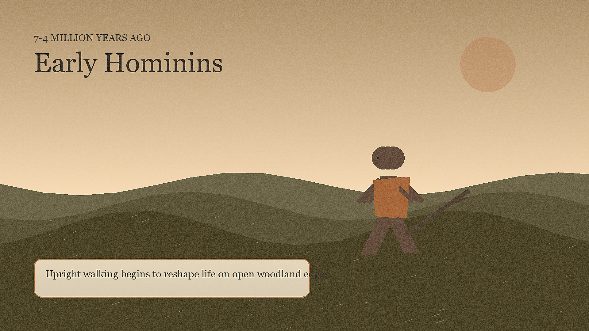
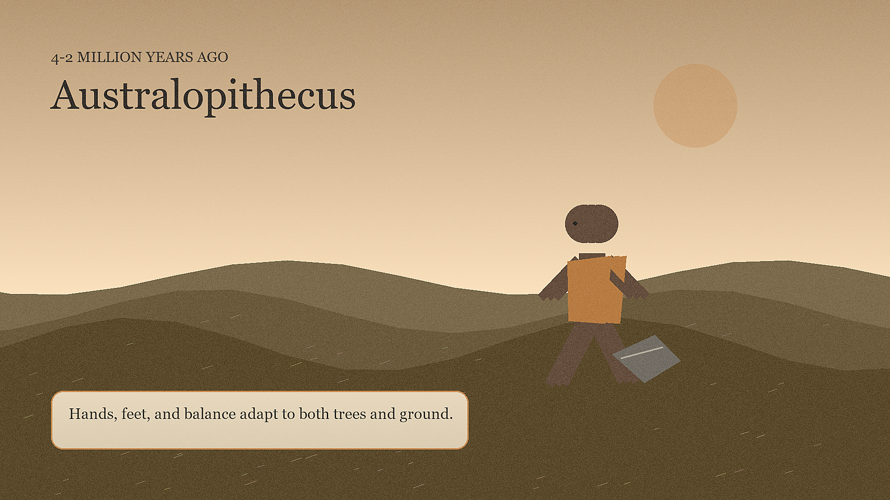
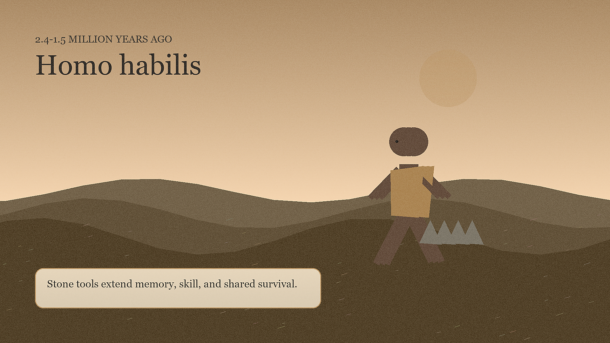
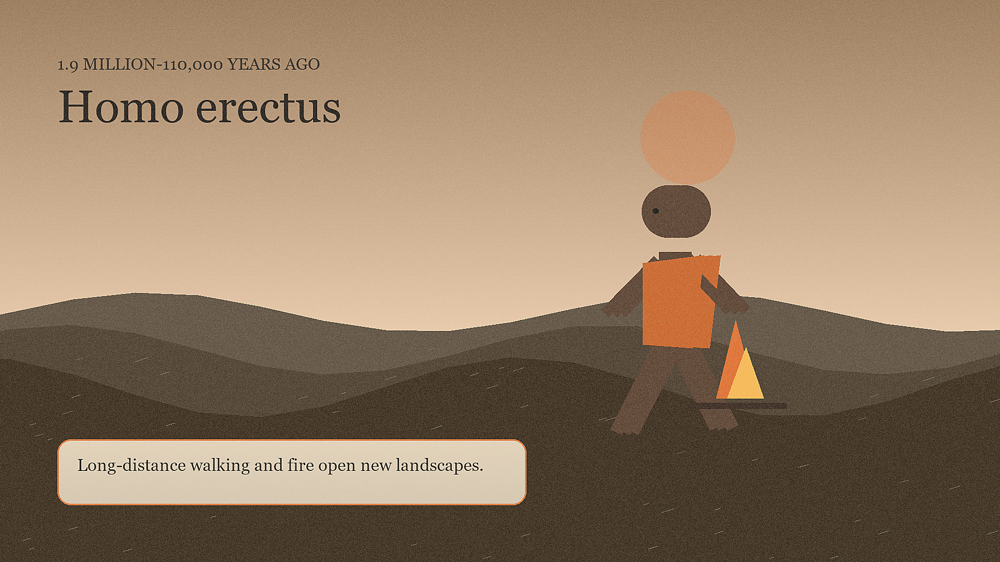
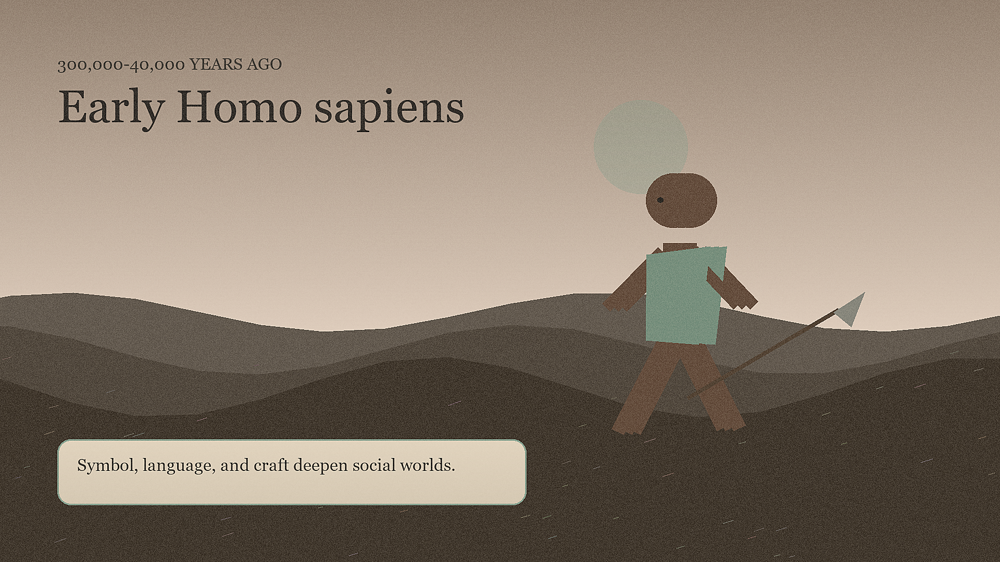
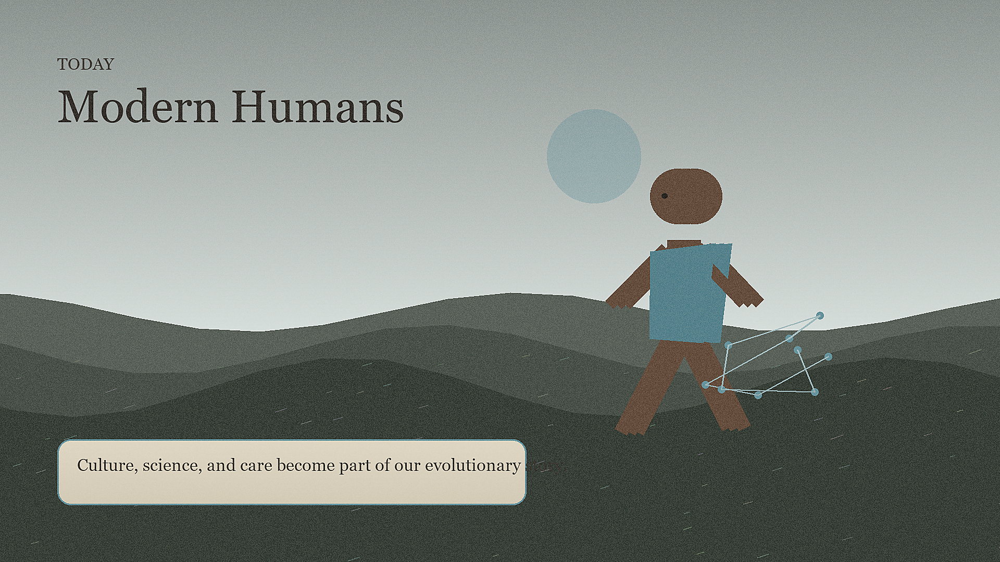

7-4 million years ago
Early Hominins
Upright walking begins to reshape life on open woodland edges.

4-2 million years ago
Australopithecus
Hands, feet, and balance adapt to both trees and ground.

2.4-1.5 million years ago
Homo habilis
Stone tools extend memory, skill, and shared survival.

1.9 million-110,000 years ago
Homo erectus
Long-distance walking and fire open new landscapes.

300,000-40,000 years ago
Early Homo sapiens
Symbol, language, and craft deepen social worlds.

Today
Modern Humans
Culture, science, and care become part of our evolutionary story.